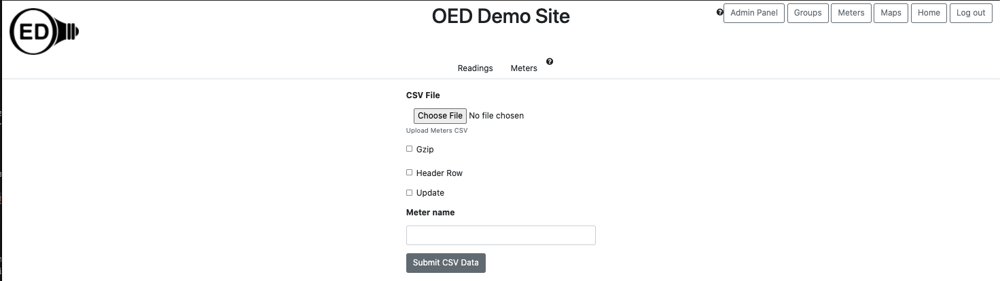

OED Documentation
Meter Import
Version V0.8.0
The latest version of this page is V1.0.0.
Documentation overview
Admin documentation
Information
Site Management
Data Acquisition
Site Installation
User documentation
Documentation versions for this page
These features are only available to select people who oversee the OED site (called admins) so this information is not usually of interest to a general user.
Overview
This page describes the process of importing meters into OED via a CSV file. See the general CSV import page for an overview and information common to all CSV imports.
Usage
The information needed to upload meters is the same whether done via the web page or direct file upload. The web page looks as follows: 
Required and optional information
- The user name and password is required in the direct file upload as described on the general CSV import page. It is automatically provided on the web page upload since you are logged in.
- CSV file ("Choose File" button on web page;
csvFileparameter on direct file upload): This gives the location of the CSV file containing the meter information. On the web page it is via a file picker popup. See below on the file format. - Is CSV file in gzip format ("Gzip" checked if true on web page;
gzipparameter on direct file upload): Note this is the Gnu zip format and not a standard .zip file format. The default value is true. Note that gzip files are smaller in size for upload and also have internal validation to protect against corruption so they are preferred. - Does CSV have a header row ("Header Row" checked if true on web page;
headerRowparameter on direct file upload): Is the first row of the CSV file header information and not an actual meter (see below for format). The default value is false. - Is this an update ("Update" checked if true on web page;
updateparameter on direct file upload): Each row is new information for the meter so it will be update with any provided values and others are left as currently set. The default value is false. - Meter name ("Meter name" input box on web page;
meterNameparameter on direct file upload): This is only used if you want to change the name of a meter (not identifier). The meter name provided is used as the name to update and the meter name value in the CSV is used as the new name. Note you can only update a single meter name at a time meaning that the CSV can only have one row of meter information.
Meter CSV file format
If the file has a header row then it should be:
name,ipaddress,enabled,displayable,type,timezone,gps,identifier,note,area,cumulative,reset,reset start,reset end,gap,variation,duplicates,timesort,end only,reading,start time,end time
More information on the first set of columns/values are described on the admin meter viewing page and the later ones are the meter defaults for reading input and described on the admin reading import page.
Each following line should contain the values for one meter. Most values can be skipped where the default value for OED will be used. A brief description of each value is in the following table:
| Meter value | Description | Default value |
|---|---|---|
| name | The internal name of a meter | none, must be provided and unique |
| ipaddress | The IP address to pull data from some meters | none but optional |
| enabled | True if OED will automatically acquire meter data (if possible) | None, must be true or false |
| displayable | Can users see this meter and its data | None, must be true or false |
| type | The type of meter data, other is used for ones not listed | none, must be mamac, metasys, obvius or other |
| timezone | The timezone of this meter as text. OED can accept most standard time zone names such as this Wikipedia one where the "TZ database name" is used, e.g., Pacific/Galapagos for the Galápagos Islands | none |
| gps | The GPS coordinates of this meter input as latitude, longitude pair (without parentheses or quotes but separated by a comma) | none |
| identifier | The name shown users for this meter | none, must be provided and unique |
| note | Information admins want to store about this meter | empty |
| area | The area associated with this meter | none |
| cumulative | true if reading are treated as cumulative for this meter | false |
| reset | true if the cumulative readings reset to zero at times | false |
| reset start | The earliest time of each day that cumulative reset can occur | 00:00:00, meaning it can start at any time during the day |
| reset end | The latest time of each day that cumulative reset can occur | 23:59:59.999999, meaning it can end at any time during the day |
| gap | How many seconds are considered normal between the end of one reading and the start of the next reading | 0.0 |
| variation | How may seconds the length of one reading can vary for the length of the next reading | 0.0 |
| duplicates | How many times a reading will occur in a row where 1 means no duplicates (the most common) | 1 |
| timesort | increasing if readings are supplied so later ones are later in time and decreasing if reverse | increasing |
| end only | true if each reading only has an end date/time stamp and no start time stamp | false |
| reading | The value of the last reading seen by this meter and normally set by OED automatically | 0.0 |
| start time | The start date/time stamp of the last reading seen by this meter and normally set by OED automatically | 1970-01-01 00:00:00 |
| end time | The end date/time stamp of the last reading seen by this meter and normally set by OED automatically | 1970-01-01 00:00:00 |
Sample file
Below are the lines for a CSV meter import file with a header row. It will import two meters (Meter 1 and Meter 2) where the meters are not enabled but are displayable. Please note that "1.2, -3.4" is a pair of values separated by a comma that would be in a single column of the CSV file and input without the quotes, i.e., 1.2, -3.4. The quotes are added when such a CSV is saved to make it clear that the comma is not a new column. Most values that are optional and unspecified so the default values are used. This meters.csv was loaded using the curl command of:
curl https://myoedserver.come:3000/api/csv/meters -X POST -F 'headerRow=true' -F 'gzip=false' -F 'email=csvuser@myorg.com' -F 'password=csvuserpassword' -F 'csvfile=@meters.csv'
assuming the shown URL, user email and password. (See admin reading sample files for more information on URL, email and password.) You need to reload the OED web page so your browser is aware of the new meters but you will get an empty graphic if used since they don't have any data.
name,ipaddress,enabled,displayable,type,timezone,gps,identifier,note,area,cumulative,reset,reset start,reset end,gap,variation,duplicates,timesort,end only,reading,start time,end time
Meter 1,,FALSE,TRUE,other,,,Student Dorm,This dorm has 20 students,13418,,,,,,,,,,,,
Meter 2,,FALSE,TRUE,other,America/Halifax,"1.2, -3.4",Athletic facility,,,,,,,,,,,,,,
Return messages
What follows are the common messages returned from a meter upload along with their meaning:
-
<h1>FAILURE</h1>CSVPipelineError: Failed to upload meters due to internal OED Error: Meter name of pipe41 seems to exist when inserting new meters and got DB error of: duplicate key value violates unique constraint "meters_name_key"
This normally happens when the name (or similarly identifier) of the meter already exists. It may be the case that you wanted to update this meter but did not specify this. -
<h1>FAILURE</h1>CSVPipelineError: Failed to upload meters due to internal OED Error: Meter name of pipe42 does not seem to exist with update for meters and got DB error of: No data returned from the query.
Request indicated to update meter(s) but at least one did not exist. All meters must exist on update. -
<h1>SUCCESS</h1>Successfully inserted the meters.<h1>FAILURE</h1>CSVPipelineError: Failed to upload meters due to internal OED Error: Meter name provided (pipe40) in request with update for meters but more than one meter in CSV so not processing
When you want to change a meter name you specify the name in the request as well as the CSV file. It then uses the name in the request to find the meter and the value in the CSV as the new meter name. However, you can only have a single meter in the CSV file for this to work. This indicates more than one meter was provided. - You can get a variety of error messages if the gzip is improperly set. These include "TypeError", "invalid message format" and others. This is because OED is incorrectly reading the CSV file and receives garbled information.
Details
Note that for efficiency reasons and because it is uncommon for the meters to change, OED does not automatically recheck for new meters when doing graphing. If you add new meters, there are two ways to get them to be available for graphing:
- You can visit the Meters viewing page if logged in as an admin. This page works directly with meter information and it does recheck for updates. Once this is done, any new meters will also be available for graphing. This is the fastest/easiest way to do this.
- You can refresh the web browser page with OED. This will cause it to return to the initial state with updated information. However, you will lose all unsaved changes along with any selected meters/graphics meaning you are restarting from scratch. This is probably only desireable if someone who is not an admin needs to see the meter changes right away.